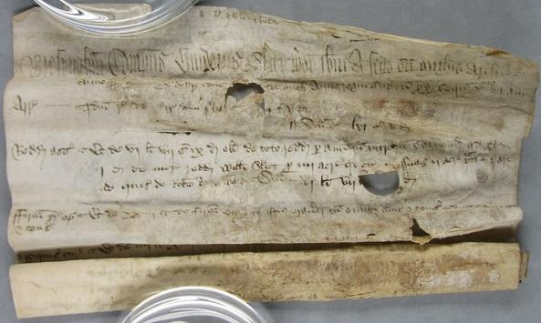
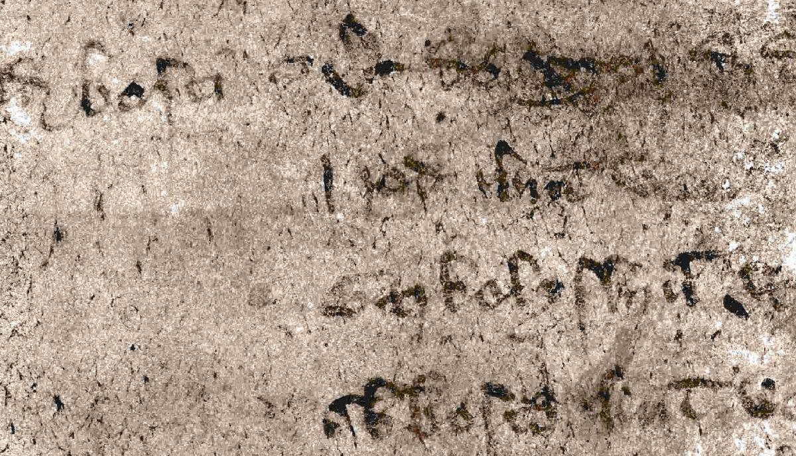

There are many historic scrolled parchments in collections that are extremely delicate due to age as well as to damage caused by fire, water, etc. This project uses high resolution X-ray microtomography to obtain a 3D scan of such documents, and then performs "virtual unrolling" so that the documents can be read without actually physically unrolling them which would cause further damage.
There are many technical challenges, such as the segmentation of the data into foreground (parchment and ink) and background (air, parchment container, etc), as well as the unrolling and visualisation of the layers. Some technical details are available in the papers below, although the computation pipeline is continuing to develop.
I gave an interview on BBC Radio Wales - Science Cafe, describing our work on revealing the contents of the 16th century Diss Heywood scroll, which is badly burnt. You can listen to it here.
Also, a brief overview can be read on the Atlas of Science.
Our earlier work was covered by the One Show on BBC One
which showcased our result of processing a 15th century scroll from Bressingham Manor,
Norfolk which had been badly water damaged a long time ago,
and had consequentially lain in a mostly unreadable state in the Norfolk Record Office for many years.
The scroll could only be unrolled a few lines, as shown below

A 3D X-ray scan was captured for the project, and is shown here as a 2D fly through. The bright spots indicate ink.
The final result is high resolution - and so you can see each character in extremly high detail.

Watch this segment of the One Show on BBC One to see members of the team
(which is made up of archivists, physicists, and computer scientists)
describe the project.
BBC Radio 5 Naked Science Podcast also covered the project in 2013. You can listen to it here.
Have a look at The Apocalypto Project webpage to find out more about this and other aspects of the project.
A brief overview of the context of the project is in the February 2012 issue of the Cardiff News.
We have recently applied a modified version of our method to extract historic film footage from badly damaged silver nitrate film. For details see: C. Liu, P.L. Rosin, Y.K. Lai, G.R. Davis, D. Mills, C. Norton, "Recovering Historical Film Footage by Processing Microtomographic Images", Int. Conf. on Digital Heritage: Progress in Cultural Heritage: Documentation, Preservation, and Protection, pp. 219-231, 2016.
More details of our work are given in:
return to Paul Rosin's homepage